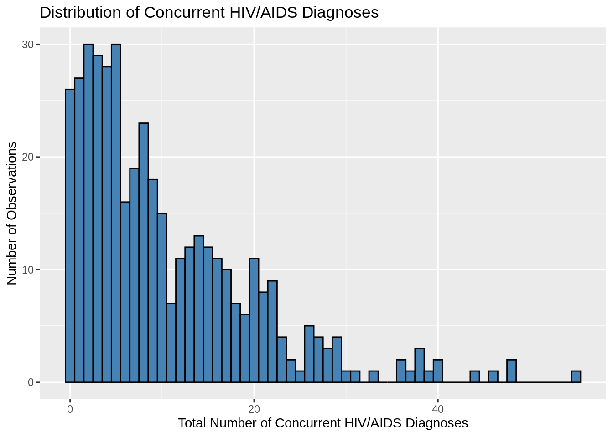
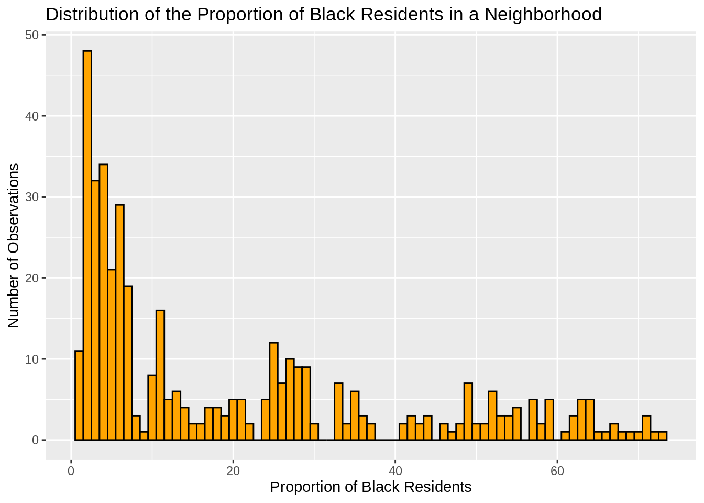

| Variable Descriptions | ||
|---|---|---|
| Variable | Data_Types | Description |
| YEAR | numeric | The year |
| Borough | character | Which borough in New York City the data is from |
| Neighborhood (U.H.F) | character | Which UHF42 neighborhood the data is from |
| SEX | character | Which sex is the data applies to |
| RACE/ETHNICITY | character | Which race/ethnicity the data applies to |
| TOTAL NUMBER OF HIV DIAGNOSES | numeric | Number of people diagnosed with HIV in the given area, during that year |
| HIV DIAGNOSES PER 100,000 POPULATION | numeric | The predicted number of HIV diagnoses in an area, in a given year, per 100,000 people |
| TOTAL NUMBER OF CONCURRENT HIV/AIDS DIAGNOSES | numeric | The number of people diagnosed with HIV and AIDS concurrently |
| PROPORTION OF CONCURRENT HIV/AIDS DIAGNOSES AMONG ALL HIV DIAGNOSES | numeric | What proportion of all new HIV diagnoses in an area, during that year, are concurrent HIV/AIDS diagnoses |
| TOTAL NUMBER OF AIDS DIAGNOSES | numeric | The number of people diagnosed with AIDS in an area, during that year |
| AIDS DIAGNOSES PER 100,000 POPULATION | numeric | The predicted number of AIDS diagnoses in an area, in a given year, per 100,000 people |
Data
We describe the sources of our data and the cleaning process.
This comes from the file data.qmd.
Data Overview
Main Dataset
Our primary dataset is HIV/AIDS Diagnoses by Neighborhood, Sex, and Race/Ethnicity. The data was originally collected from the New York City Department of Health and Mental Hygiene (NYC DOHMH), which collected and compiled information on new HIV and AIDS diagnoses reported through March 31, 2021. Specifically, this dataset covers cases diagnosed from calendar years 2010 through 2013, then 2016 through 2020. The data were collected to monitor trends in HIV and AIDS diagnoses, enabling public health officials to track disease patterns, guide prevention and treatment strategies, and identify disparities across different neighborhoods and demographic groups within NYC. Cases are stratified by borough, United Hospital Fund (UHF) neighborhoods, sex, and race/ethnicity, allowing for targeted public health responses. For each category, the dataset tracks the total number of HIV and AIDS cases and the case rate per 100,000 people. The original dataset can be obtained directly from the NYC DOHMH or accessed through official public health data portals maintained by New York City. Below is a list of the variables in the dataset.
This analysis primarily focuses on the TOTAL NUMBER OF CONCURRENT HIV/AIDS DIAGNOSES column. The main reasons for this are:
Since HIV, when untreated, progresses to AIDS, it reflects a late diagnosis. Since this analysis investigates potentially inequality in testing to do a lack of resources or other structural barriers, these diagnoses are directly linked to that phenomenon.
Concurrent diagnoses are more sensitive to neighborhood-level inequality because late testing is often influenced by: distrust in local healthcare, overburdened clinics, a lack of insurance, and stigma.
These diagnoses are in the most urgent need of assistance.
Below is a histogram displaying the values TOTAL NUMBER OF CONCURRENT HIV/AIDS DIAGNOSES tends to take when filtered by individual neighborhood and including all races and sexes.

The histogram displays a clear right-skewed distribution. Most of the values seems to be concentrated in the 0-5 case range, which makes sense, since being diagnosed with HIV and AIDS concurrently is rarer than just HIV or just AIDS. Although, there are still a significant number of cases in the 10-25 case range, demonstrating this is still an issue affecting a significant number of people. There are a few instances of the case numbers surpassing 40 and even 50, indicating some outlier neighborhoods which experience extreme burdens.
Secondary Datasets
The other datasets we used came from the same source, which is nyc.gov’s Environment and Health Data Portal. This website is run by New York City’s Department of Health and Mental Hygiene and is where their employees store data they accumulate about New York City’s public health, in order for decision makers and regular citizens to observe trends within the city. This link is to a dataset calculating the proportion of each race in each borough and UHF neighborhood, although that is only one of the many social conditions they monitor. Other conditions monitored include: high school graduation rates, unemployment rates, incarceration rates, and health insurance rates. Each of these datasets is on one specific topic which you select, and for that topic, it will display the proportion of that borough which meets the criteria, for every year they calculated the data. For the race dataset, for each year, it will list the proportion of each major race in each borough, and then each UHF neighborhood within that borough. Because the website is run by the same people who collected our primary dataset, they use the same storage system with race and sex within each borough and UHF neighborhood, making joining datasets easier. Additionally, each dataset, when downloaded, although not visible on the website, comes with each neighborhood’s GEOID, allowing it to be combined with census shapefiles for visualization. Below is a list of all variables added to the main dataset to be used as predictors.
| Variable Descriptions | ||
|---|---|---|
| Variable | Data_Type | Description |
| Estimated Poverty Rate | number | Percentage of people in that neighborhood, in that year, which live below the poverty line |
| asian_prop | number | Proportion of Asian residents in that neighborhood, in that year |
| black_prop | number | Proportion of black residents in that neighborhood, in that year |
| hispanic_prop | number | Proportion of Hispanic residents in that neighborhood, in that year |
| white_prop | number | Proportion of white residents in that neighborhood, in that year |
| Estimated Non-High School Graduation Rate | number | Percentage of people living in that neighborhood, ages 25 and up, in that year, who did not graduate high school |
| Estimated Unemployment Rate | number | Percentage of people ages 16 and up, living in that neighborhood, in that year, who are unemployed |
| Estimated Rent-Burdened Household Rate | number | Percentage of people in that neighborhood, in that year, who spend 30% or more of their income on rent and utilities |
| Estimated Non-Owner-Occupied Home Rate | number | Percentage of people in that neighborhood, in that year, who live in homes they do not own |
| Estimated Child Poverty Rate | number | Percentage of children under five years old in that neighborhood, in that year, living below the poverty line |
| Estimated Asthma Hospitalization Rate | number | Number of asthma cases per 10,000 which requires hospitalization per neighborhood, per year |
| Estimated Crowded Household Rate | number | Percentage of households in that neighborhood, in that year, which have more than one person per room living in it |
| Estimated Non-Health Insurance Rate | number | Percentage of people in that neighborhood, in that year, which do not have health insurance |
Below are some quick graphs of some variables. First, a histogram displaying the values black_prop tends to take on.

The graph has a right-skewed distribution, indicating many UHF42 neighborhoods are not racially homogeneous. Most neighborhoods seem to be anywhere from 2-8% black. Despite that, there are some neighborhoods which are over 60% black, indicating certain races tend to live together in the same neighborhoods.
Next, a plot displaying the values Estimated Non-Health Insurance Rate tends to take on.
This graph displays a more normal distribution than other variables, but still slightly skewed to the right. Most neighborhoods have around 6-16% of their residents uninsured, which makes sense, as with Medicare and Medicaid being available, most people qualify for some sort of health insurance, although that doesn’t prevent outliers, such as one neighborhood with nearly 50% of its residents having no health insurance, potentially indicating extreme underfunding and a lack of attention.
Finally, below is a graph displaying the values Estimated Poverty Rate tends to take on.
This graph also displays a right-skewed distribution. Most neighborhoods have around 5-15% of their residents living in poverty, although there are a significant number of times when a neighborhood has 20% or more of its residents living in poverty, with some outliers each surpassing 40%, continuing to indicate some extreme outliers in the data and neighborhoods which may be underfunded and underrepresented.
The shapefiles we used can be found on New York City’s Environmental Health Services Team’s public GitHub. Specifically, this repository contains the UHF 42 .shp files and .json files we used in our maps and our interactive.
Cleaning the Data
Here is the link to our clean_data.R script. This cleaning was done on the main HIV/AIDS dataset.
The first step in cleaning the dataset was filling in missing borough values for data compiled from 2010-13. The original dataset always compiled the neighborhood, but didn’t start including the borough until 2016. Because of the data not being stored according to borough, but having neighborhoods from different boroughs stored in neighboring cells, the fill command couldn’t be used because it would take the last borough value and fill that in for all missing borough values, which would attribute that borough to incorrect neighborhoods. Instead, we made a copy of the original dataset and used a command within a Microsoft Excel spreadsheet to assign each neighborhood the proper borough and then pasted that command into each blank borough cell and had the spreadsheet fill in the missing values.
Next, we ensured all variables were stored the same way. In the original dataset, the authors sometimes compiled the same variable in different ways. One of the most common disparities was in how variables with a space in the name were stored. Sometimes, instead of using a space, the authors used a line break. When viewing these names in the .csv file or in an imported dataset in R, the difference was invisible, but when trying to perform analysis, R would consider these variables with the same name to be two different variables, due to the line break. In order to fix this, all line breaks were replaced with spaces, which can be seen in our clean_data.R script. Below is a quick example of what a line of code for adjusting one variable name looks like.
RACE/ETHNICITY = str_replace_all(RACE/ETHNICITY, “”, ” “)
There were other ways a slightly different spelling made R consider a variable referring to the same place or race as two different variables. Sometimes, it was due to the lack of a space where there sometimes was a space, as in the neighborhood Upper East Side. In the original dataset, sometimes this was stored as “Upper Eastside.” We added a space to variables stored like this, in order for the variable names to coincide with the actual names of the neighborhoods. Another storage difference was with the Hispanic race variable. Sometimes it was stored as “Latino/Hispanic” and other times as just “Hispanic”; we stored every instance of it as “Hispanic” for simplicity. A list of all changes to variable names of this manner can be seen in our clean_data.R script. Below is an example of what this looks like for one name.
RACE/ETHNICITY = str_replace_all(RACE/ETHNICITY, “Latino/Hispanic”, “Hispanic”)
Finally, we used the complete.cases function to filter out all rows with NA values.
A similar process was done for the secondary datasets we added. Often, they would store the same UHF 42 neighborhood name differently than the main dataset. For example, they would often store the neighborhood “Fordham - Bronx Park” as “Fordham - Bronx Pk”. Using the same process above, this was changed for all names stored in this way, so the datasets could be joined easier. Joining the datasets occured by doing a simple left_join with the main dataset and joining by YEAR and Neighborhood (U.H.F). The secondary datasets would then add one column with the predictor value they added, such as poverty rate.
The last major cleaning step done to get our data was extract single-year values from the secondary datasets. Despite being compiled by the same people who compiled our original dataset, the secondary datasets were often compiled in five-year increments and the assigned values would be the average over that five year period. The HIV dataset was compiled on a year-to-year basis, so assigning the five-year averages to a single year wasn’t plausible. This was the compromise:
Each five-year period would have its midyear calculated. For example, for the period 2017-2021, the midyear is 2019.
The five-year averages would be assigned to the midyear.
Based on the years the authors compiled, this gave us data for all the years in our original dataset, except 2020 and 2021.
Using the averages now assigned to the midyears, a polynomial model was constructed which predicted the values of each variable for 2020 and 2021 and created a tibble containing an estimated rate of each variable in each UHF42 neighborhood, in each year. Below is an example of this process being done for the
Estimated Unemployment Ratevariable and the resulting table below, filtered to show what it looks like for one neighborhood. This process was repeated for each predictor variable.
unemp <- read_csv(
here::here("dataset", "NYC EH Data Portal - Unemployment (filtered).csv"),
show_col_types = FALSE)
unemp_f <- unemp |>
mutate(midpoint = as.integer(str_extract(TimePeriod, "\\d{4}")) + 2)
unemp_by_neighborhood <- unemp_f |>
group_by(Geography) |>
nest() |>
mutate(
model = map(data, ~ lm(Percent ~ poly(midpoint, 2), data = .x)),
newdata = list(tibble(midpoint = 2007:2021)),
predicted = map2(model, newdata, ~ mutate(.y, estimated_rate =
predict(.x, newdata = .y)))
) |>
select(Geography, predicted) |>
unnest(predicted) |>
filter(!midpoint %in% c(2007, 2008, 2009, 2014, 2015)) |>
rename(
YEAR = midpoint,
`Neighborhood (U.H.F)` = Geography,
`Estimated Unemployment Rate` = estimated_rate
) |>
mutate(
`Neighborhood (U.H.F)` = str_replace_all(`Neighborhood (U.H.F)`,
"Upper East Side", "Upper Eastside"),
`Neighborhood (U.H.F)` = str_replace_all(`Neighborhood (U.H.F)`,
"Upper West Side", "Upper Westside"),
`Neighborhood (U.H.F)` = str_replace_all(`Neighborhood (U.H.F)`,
"Greenwich Village - SoHo", "Greenwich Village - Soho"),
`Neighborhood (U.H.F)` = str_replace_all(`Neighborhood (U.H.F)`,
"Crotona -Tremont", "Crotona - Tremont"),
`Neighborhood (U.H.F)` = str_replace_all(`Neighborhood (U.H.F)`,
"Rockaways", "Rockaway"),
`Neighborhood (U.H.F)` = str_replace_all(`Neighborhood (U.H.F)`,
"Fordham - Bronx Pk", "Fordham - Bronx Park"),
`Neighborhood (U.H.F)` = str_replace_all(`Neighborhood (U.H.F)`,
"Downtown - Heights - Slope", "Downtown - Heights - Park Slope"),
`Neighborhood (U.H.F)` = str_replace_all(`Neighborhood (U.H.F)`,
"Washington Heights", "Washington Heights - Inwood")
)
suppressPackageStartupMessages(library(rmarkdown))
knitr::kable(head(unemp_by_neighborhood, 10))| Neighborhood (U.H.F) | YEAR | Estimated Unemployment Rate |
|---|---|---|
| Kingsbridge - Riverdale | 2010 | 9.788671 |
| Kingsbridge - Riverdale | 2011 | 9.640979 |
| Kingsbridge - Riverdale | 2012 | 9.442238 |
| Kingsbridge - Riverdale | 2013 | 9.192448 |
| Kingsbridge - Riverdale | 2016 | 8.136783 |
| Kingsbridge - Riverdale | 2017 | 7.682797 |
| Kingsbridge - Riverdale | 2018 | 7.177762 |
| Kingsbridge - Riverdale | 2019 | 6.621678 |
| Kingsbridge - Riverdale | 2020 | 6.014545 |
| Kingsbridge - Riverdale | 2021 | 5.356364 |
Because most of the predictor variables were risk factors, some variables which weren’t risk factors, like high school graduation rate, were turned into risk factors by using that rate to calculate the proportion of people which did not graduate high school. This was done because it was expected that if more people graduated high school, they would have a higher level of education and therefore know more about health and safety measures, so a higher value was beneficial. This seemed like an awkward pairing with other variables, like poverty rate, where a higher value was worse than a lower value. The opposite of each seemingly beneficial predictor was calculated for these purposes. This was done for: Estimated Non-High School Graduation Rate, Estimated Non-Owner-Occupied Home Rate and Estimated Non-Health Insurance Rate. The calculation was very simple. Using the process described above gave the proportion of people who did do these things, for example, the proportion of people who graduated high school. To find the proportion of people who didn’t graduate high school, all that had to be done is do 1 - proportion of people who graduated high school.
The only predictor variable which required another extra step was Estimated Non-Health Insurance Rate. This is because the data was stored according to UHF34 neighborhoods, instead of UHF42 neighborhoods like the original dataset and the rest of the predictors. New York City’s DOHMH sometimes stored data in UHF34 neighborhoods in order to get more people in each neighborhood. They formed these UHF34 neighborhoods by combing some smaller UHF42 neighborhoods into one neighborhood. Most UHF34 neighborhoods are the same as their UHF42 neighborhood.
Below are two maps: the first displays New York City broken up into UHF42 neighborhoods, and the second displays New York City broken up into UHF34 neighborhoods.
Linking to GEOS 3.11.1, GDAL 3.6.2, PROJ 9.1.1; sf_use_s2() is TRUEAs displayed above, Staten Island had its four UHF42 neighborhoods combined into two UHF34 neighborhoods. Manhattan (the most northwestern area) had several small UHF42 neighborhoods condensed, as well as the Bronx (the most northeastern area).
The way we settled on adding health insurance as a predictor was to map each UHF42 neighborhood to the UHF34 neighborhood it belongs to and then assign the value associated with that UHF34 neighborhood to each UHF42 neighborhood in that neighborhood. This had the downside of only adding 34 unique values, instead of 42, which reduced the integrity of our model, but health insurance was thought to be a valuable enough predictor to do so.
Below is the entire process through which this was accomplished.
hi <- read_csv(
here::here("dataset",
"NYC EH Data Portal - Health insurance (adults) (filtered)(1).csv"),
show_col_types = FALSE)
map_uhf <- read_csv(
here::here("dataset", "UHF34_to_UHF42 .csv"), show_col_types = FALSE) |>
mutate(`Neighborhood (U.H.F)` = str_replace_all(`Neighborhood (U.H.F)`,
"Staple - St. George", "Stapleton - St. George"))
hi_f <- hi |>
filter(GeoTypeDesc == "UHF 34") |>
rename(YEAR = TimePeriod) |>
select(YEAR, GeoTypeDesc, Geography, Percent) |>
mutate(
Percent = str_remove_all(Percent, "\\*|\\s*\\(.*\\)"),
Percent = as.numeric(Percent)
) |>
group_by(Geography) |>
nest() |>
mutate(
model = map(data, ~ lm(`Percent` ~ poly(YEAR, 2), data = .x)),
newdata = list(tibble(YEAR = 2010:2021)),
predicted = map2(model, newdata, ~ mutate(.y, estimated_rate =
predict(.x, newdata = .y)))
) |>
select(Geography, predicted) |>
unnest(predicted) |>
filter(!YEAR %in% c(2014, 2015)) |>
mutate(`Estimated Non-Health Insurance Rate` = 100 - `estimated_rate`) |>
select(-`estimated_rate`)
suppressWarnings({
hi_uhf <- hi_f |>
left_join(map_uhf, by = "Geography") |>
ungroup() |>
select(-Geography)
})map_uhf is a .csv created created ourselves, which maps each UHF42 neighborhood to its UHF34 neighborhood.